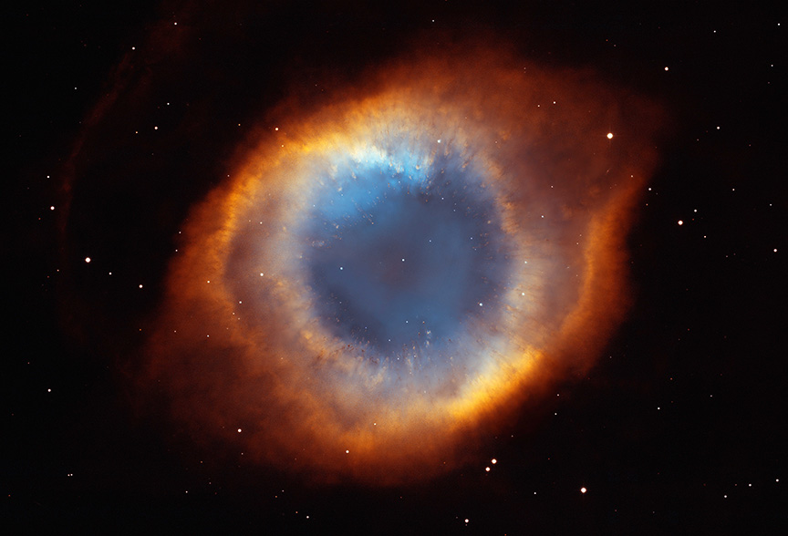
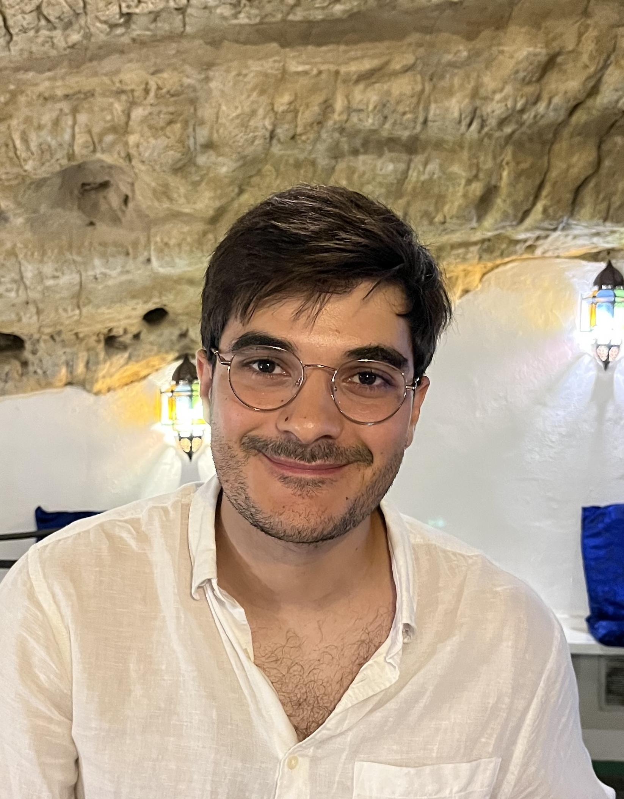
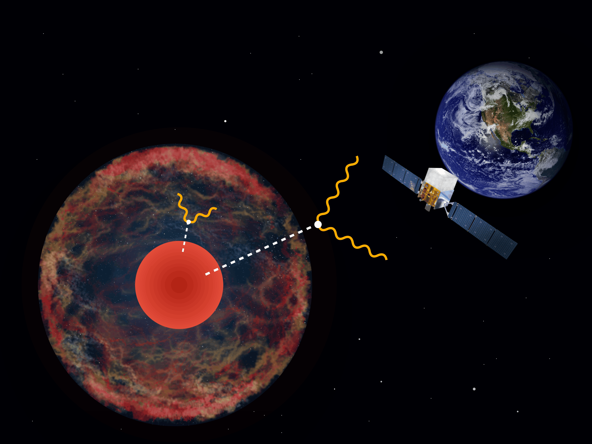

Jun 2025 — present
PhD Researcher
TU Dortmund University, Germany

Astroparticle physics
PhD Student in Astroparticle Physics
TU Dortmund University & Universidad de Zaragoza
Searching for axions in the X-ray and gamma-ray sky
with NuSTAR, Fermi-LAT and the IAXO helioscope

About
I am a PhD student at TU Dortmund, in a joint doctorate with the University of Zaragoza, working with Prof. Maurizio Giannotti and Prof. Julia Katharina Vogel.
My work runs from modelling axion emission in supergiant stars and stripped-envelope supernovae, through the statistical analysis of the resulting X-ray and gamma-ray signals, down to the glass optics that would focus a solar axion signal in the IAXO helioscope.
F. R. Candón, D. F. G. Fiorillo, A. G. Muyor, H.-T. Janka, E. Vitagliano, G. G. Raffelt
F. R. Candón, D. F. G. Fiorillo, G. Lucente, E. Vitagliano, J. K. Vogel
F. R. Candón, P. Carrasco, M. Giannotti, M. Kaltschmidt, J. Ruz, J. K. Vogel
Collaborations, seminar invitations, outreach, or questions about any of the papers — email is the fastest way to reach me.
francandon@unizar.esBio & CV
I studied Physics at the University of Salamanca, where I found my way into phenomenology — the part of the field where a theoretical idea has to survive contact with a real astrophysical object. That took me to the Master's in Physics of the Universe at the University of Zaragoza and to CAPA, one of the strongest dark matter groups in Spain.
At Zaragoza the IAXO group hired me to build analysis and database tools for the collaboration. In parallel I started working on X-ray astronomy with NuSTAR, Swift and Chandra data, asking a simple question: if axions are produced inside stars, what would we already have seen?
Since September 2024 I am a PhD student at TU Dortmund, in a joint doctorate with Zaragoza, working on X-ray telescope technology for light dark matter searches — from modelling axion emission in supergiants and stripped-envelope supernovae to the glass optics that would focus a solar axion signal in IAXO.
Outside of research I ran the social media of CAPA and still enjoy explaining this work to people who have no reason to care about axions yet — see Outreach.
Jun 2025 — present
TU Dortmund University, Germany
May 2023 — Jun 2025
CAPA, Universidad de Zaragoza
May — Jun 2023
DTU Space, Copenhagen
Feb — Jun 2022
CIEMAT, Madrid
Sep 2024 — present
TU Dortmund & Universidad de Zaragoza
Jul 2024
Universidad de Zaragoza
Jul 2022
Universidad de Salamanca
Best poster award — Physics School “Unifying view on cosmic interacting matter”, Bad Honnef (2026). CERN course: First Steps with Geant4 (2025).

Cover art — axion conversion en route from a supergiant to a space telescope
Research
Axions and other weakly interacting slim particles would be produced copiously in hot, dense stellar interiors and would leave the star almost unimpeded. What reaches us is a photon — after conversion in a magnetic field. Everything I work on is a variation on finding that photon.
Stellar probes
Nuclear and Primakoff production inside evolved massive stars such as Betelgeuse leaves a hard X-ray signature. Non-detections with NuSTAR turn into some of the strongest bounds on the axion–nucleon and axion–photon couplings.
Supernovae
A compact progenitor lets an axion-induced gamma-ray burst escape essentially unattenuated. Modelling that transparency window makes stripped-envelope supernovae a uniquely clean target for QCD axion detection.
Instrumentation
Characterising NuSTAR-heritage glass optics and building the analysis and database infrastructure the IAXO helioscope needs to focus a solar axion signal onto a few square millimetres.
Preprints of everything below are on the arXiv; the complete and always-current list lives on INSPIRE-HEP.
Compact progenitors let an axion-induced gamma-ray burst escape almost unattenuated, making stripped-envelope supernovae a uniquely clean channel for QCD axion detection.
DOI: 10.1103/bqpl-zyr8Deep NuSTAR observations of the starburst galaxy M82 constrain radiatively decaying particles produced in its dense stellar population, setting new limits over a broad mass range.
arXiv:2412.03660Nuclear axion production in evolved supergiants converts to hard X-rays in the Galactic magnetic field; the absence of such a signal bounds the axion–nucleon coupling.
DOI: 10.1103/xv5c-j2rvRepurposing a flying X-ray observatory as a solar axion detector, exploiting NuSTAR's focusing optics and low background.
DOI: 10.1103/18sn-hxtbTalks & posters
Jan 2026
Physics School “Unifying view on cosmic interacting matter”, Bad Honnef, Germany
Poster
Dec 2025
Saturnalia 2025 Workshop, Zaragoza, Spain
Opening talk
Nov 2025
COST Action Cosmic WISPers, WG3 monthly meeting
Invited
Sep 2025
COST Action Cosmic WISPers CW3 training school, LAPTh, Annecy, France
Talk
May 2025
2nd UNDARK School: the multi-messenger non-thermal universe, Benasque, Spain
Talk
Jul 2024
COST Action CW 3rd General Meeting, Sofia, Bulgaria
Invited
Apr 2024
22nd Multidark Meeting, Salamanca, Spain
Talk
Outreach
I was the social media manager at CAPA (@CAPAUnizar), where I led the content team and coordinated the centre's outreach activities — scripting, recording and editing videos end to end. On the right, me explaining neutron stars in under a minute.
If you run a school visit, a science festival, or a podcast and want someone to explain axions without equations, get in touch.